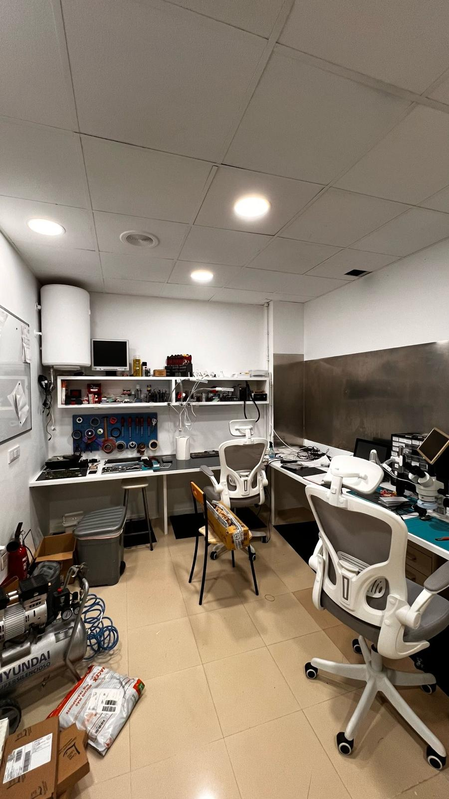
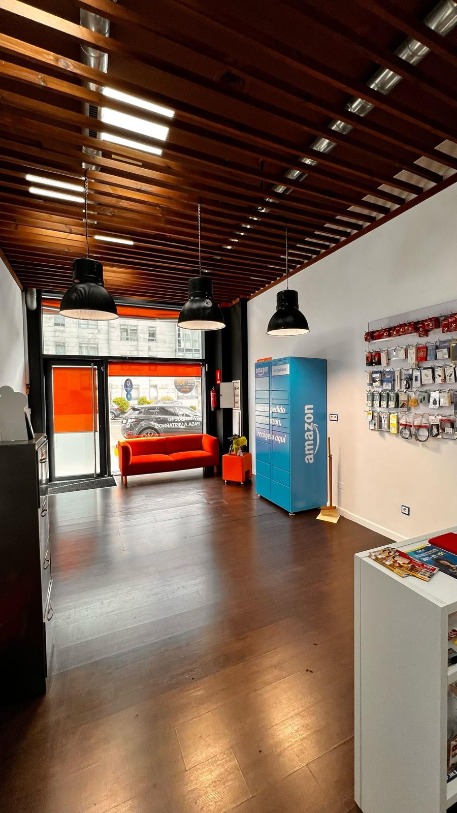
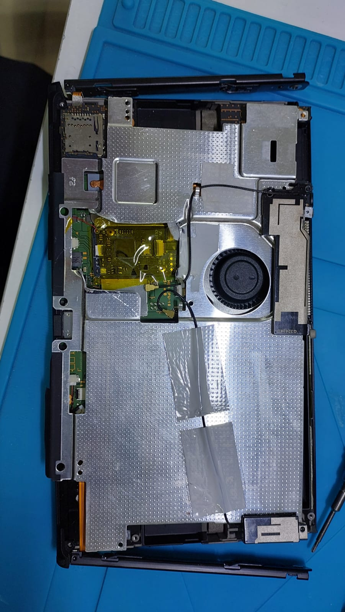
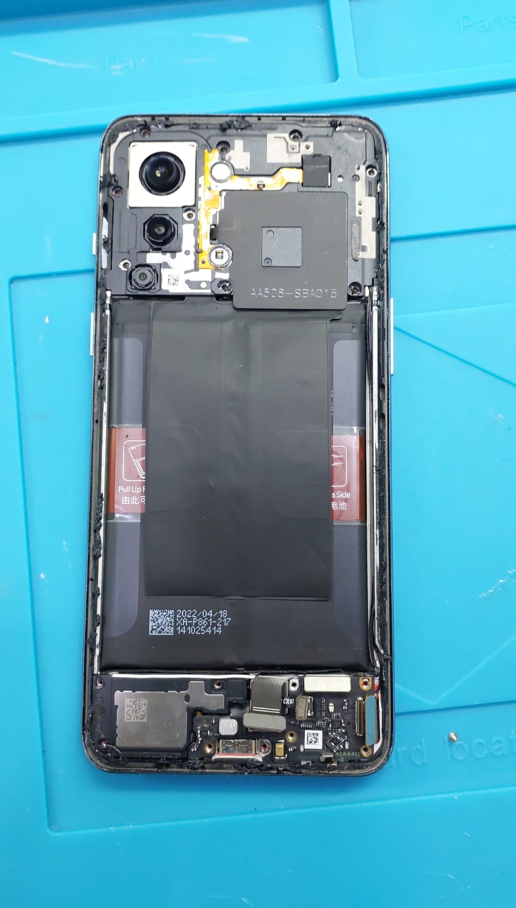

Chi sono
Frequento il 4° anno dell'indirizzo informatico all'Istituto Tecnico Tecnologico Allievi-Sangallo di Terni e ho avuto l'opportunità di svolgere un'esperienza FSL all'estero, in Spagna.
Cosa ho imparato
Ho imparato a riconoscere problemi hardware e software su smartphone, computer e console, lavorando direttamente sui dispositivi — sostituendo schermi, batterie e altri componenti — con strumenti professionali come saldatori e pinzette.
Mi sono occupato della creazione di un sito web per la vendita di componenti informatici e ho imparato a gestire le scorte di magazzino. Ho migliorato le mie capacità di lavoro in gruppo e la gestione delle situazioni sotto pressione.
FSL all'estero vs in Italia
🌍 All'estero
Uso quotidiano di una lingua straniera, gestione autonoma del tempo e delle giornate. Contatto con una cultura e una mentalità diverse, che hanno ampliato la mia visione del mondo e del lavoro.
🇮🇹 In Italia
Ambiente più familiare, vicinanza agli affetti. Il contesto professionale nazionale rispecchia dinamiche già conosciute, rendendo l'inserimento inizialmente più immediato.
L'azienda: Reparalotodo
Centro di assistenza tecnica situato a Santiago de Compostela. Si occupa della riparazione di smartphone, tablet, computer e console con alta precisione ed efficienza, utilizzando solo componenti originali o di qualità compatibile.
Il datore di lavoro, Felipe, è sempre stato cordiale e professionale: si è fidato delle nostre capacità e ci ha permesso di lavorare anche su dispositivi di valore elevato.
Il posto di lavoro



